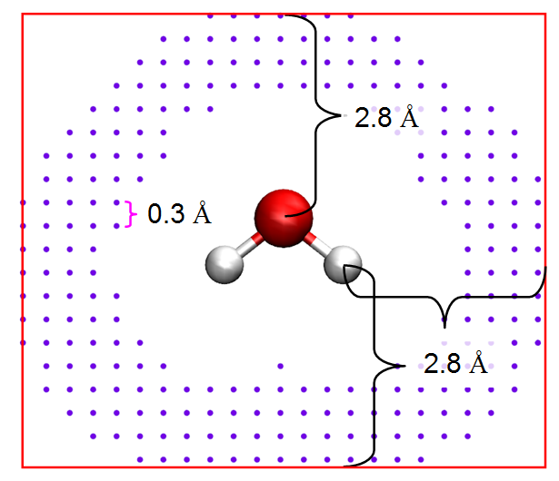

布居分析与原子电荷计算¶
Multiwfn manual, p.103–133.英文原文见同名 English 章节。 Images:
../imgs/.
Tian Lu,* Qinxue Chen, Partial Charges, In Exploring Chemical Concepts Through Theory and Computation. WILEY-VCH GmbH: Weinheim (2024); pp. 161-187. DOI: 10.1002/9783527843435.ch6。
3.9.1 Hirshfeld 原子电荷 (1)¶
Hirshfeld 是非常流行的基于 deformation 密度划分的原子布居方法，Hirshfeld 电荷定义为 (Theor. Chim. Acta (Berl.), 44, 129 (1977))
def( )( )dAAqwρ= −∫rrr Hirsh
其中
A
也可改写如下以使其物理意义更清晰
其中 pA 为实际化学体系中原子的布居数。Z 为核电荷，等于该原子在自由状态下所带电子数。
Hirshfeld 布居的优点为：1. 结果与电负性规则等一般化学概念定性一致。
-
用于空间划分的权重函数 w 具有明确的物理意义。3. 与 AIM 电荷等基于电子密度积分的方法不同，Hirshfeld 电荷反映的是分子形成过程中转移的电子密度量，未转移的密度不参与。
-
对波函数质量不敏感。5. 虽然计算 Hirshfeld 电荷需要在实空间积分，但由于被积函数光滑，可直接使用成熟的密度泛函理论（DFT）格点积分方案，故 Hirshfeld 布居高效。
-
应用领域广泛。Deformation 密度数据也可由 X 射线晶体学实验获得。此外，Hirshfeld 布居的适用性不受波函数类型限制，该方法可直接应用于固体体系，其中波函数一般用平面波函数描述。
Hirshfeld 布居的缺点是电荷总是太小，且对可观测量如分子偶极矩和 ESP 的重现性差，原因是 Hirshfeld 布居完全忽略了原子偶极矩。
计算后，若打印的所有 Hirshfeld 电荷之和非常接近整数，说明积分数值准确；若不是，说明输出的 Hirshfeld 电荷不可靠，需将“radpot”与“sphpot”设为更大值以增大积分点密度并重新计算。为平衡计算时间与精度，“radpot”与“sphpot”的默认值分别为 75 和 434，可分别将其设为 100 和 590 以获得更准确的结果。
示例见 4.7.1 节。所需信息：GTFs、原子坐标
3.9.2 Voronoi deformation density (VDD) 原子布居 (2)¶
VDD 与 Hirshfeld 布居的唯一区别是权重函数 w 不同。在 VDD 布居中，使用类 Voronoi 胞划分，每个胞对应一个原子，详见 J. Comput. Chem., 25, 189 (2004)。
VDD 布居的结果总体上与 Hirshfeld 布居相似，因为 deformation 密度的量级总是很小，故使用不同权重函数时电荷没有显著变化。输出项与 Hirshfeld 布居完全相同。就个人而言，我建议使用 Hirshfeld 布居而非 VDD。
注意若 VDD 原子电荷之和与分子净电荷明显偏离，说明数值积分精度不理想，因此应增大 settings.ini 中的 "sphpot" 参数以改善结果。"radpot" 参数也影响结果，但不如 "sphpot" 显著。
所需信息：GTFs、原子坐标
3.9.3 Mulliken 原子与基函数布居分析 (5)¶
理论 Mulliken 分析是最早的基于轨道波函数的布居方法，几乎所有量子化学软件包都支持。
自旋轨道波函数的正交归一条件要求 21( ) dφ= ∫rr，若假设
a
对其展开，可得
第一项为“局域项”，表示轨道 i 中每个基函数的净布居，第二项为“交叉项”，表示轨道 i 中基函数对之间的共享电子。局域项当然应完全归属相应基函数，但交叉项的划分方法并不唯一。Mulliken 将自旋轨道 i 中基函数 a 的布居定义为
即每个交叉项 baibiaSCC,,,2 被平均划分给相应的两个基函数。
原子 A 的布居数即为所有轨道中归属原子 A 的所有基函数的布居数之和。Mulliken 原子电荷定义为
其中 η 为轨道占据数，ni,A 为轨道 i 的贡献。
Mulliken 分析因以下缺点而不适于实际应用：1. 对分子偶极矩等可观测性质的重现性差 2. 交叉项的“平均划分”没有严格的物理意义 3. 基组依赖性非常高。特别是不应出现弥散函数，否则结果将具误导性。
- 偶尔出现无意义的结果（布居数为负）。
用法 由于对大体系输出信息量巨大，在选择以下子功能前，可使用选项 -1 将默认输出目标由屏幕改为特定的纯文本文件。
·子功能 1（输出 Mulliken 布居与原子电荷）(Output Mulliken population and atomic charges)：打印基函数的布居、基函数壳层的布居、原子轨道各角动量的布居以及原子电荷。
·子功能 2（输出总原子布居矩阵并分解）(Output gross atomic population matrix and decompose it)：打印总原子布居矩阵，从中可得到每个原子的局域项（对角元）与每对原子间的交叉项（非对角元乘以 2）。矩阵元定义为
注意输出矩阵的最后一行为相应列元之和，即相应原子的总布居数。还可选择将矩阵分解为每个占据轨道的贡献，Ω 矩阵将输出至当前目录的 groatmdcp.txt。
𝑖 恰为 3.11.4 节将看到的轨道 i 贡献的原子 A 与 B 间的 Mulliken 键级。顺带一提，量 2Ω𝐴,𝐵
·子功能 3（输出总基函数布居矩阵并分解）(Output gross basis function population matrix and decompose it)：此选项可输出总基函数布居矩阵以进一步分析电子分布细节，矩阵元定义为
同样，在子功能 2 中，输出矩阵的最后一行为相应基函数的总布居数。还可选择输出每个占据轨道的贡献，即 Γ𝑎,𝑏 𝑖，至当前目录的 grobasdcp.txt（注意即使对中等大小体系该文件也极大）。
·子功能 4（将轨道对原子布居的贡献输出至 atmpopdcp.txt）(Output orbital contributions to atomic populations to atmpopdcp.txt)：此选项用于输出占据轨道对原子布居的贡献，即所有
Mulliken 布居分析的例子见 4.7.0 节。所需信息：基函数
3.9.4 Löwdin 原子与基函数布居 (6)¶
Löwdin 与 Mulliken 布居分析的唯一区别是是否先做 Löwdin 正交化。在 Löwdin 正交化中，变换矩阵为
其中 U 为重叠矩阵的本征矢矩阵，矩阵 s 为 diag(λ1, λ2...)，其中 {λ} 为重叠矩阵的本征值集合。Löwdin 正交化后，重叠矩阵变为单位矩阵，新系数矩阵为 X-1C。
表面上，Löwdin 布居避免了交叉项的划分，因为它们已变为零，实际上，划分步骤只不过隐藏在正交化中。由于 Löwdin 正交化仍无强物理意义，不能断言 Löwdin 布居优于 Mulliken。就实际结果看，也发现 Löwdin 电荷相对 Mulliken 电荷无明显优势，尽管有人认为 Löwdin 电荷具有更好的基组稳定性和分子偶极矩重现性。此外，Mayer 等发现当使用 Cartesian 型 Gaussian 基函数时 Löwdin 布居在一定程度上具有旋转依赖性，但一般可安全忽略，细节见 Chem. Phys. Lett., 393, 209 (1968) 与 Int. J. Quantum Chem., 106, 2065 (2006)。
所需信息：基函数
3.9.5 Ros & Schuit 定义的修正 Mulliken 原子布居¶
(SCPA) (7)¶
一些人曾提出几种不同的交叉项划分方法以改进 Mulliken 分析，它们一般称为修正 Mulliken 布居分析（MMPA）。在 Ros 与 Schuit 提出的方法（Theo. Chim. Acta, 4, 1 (1966)）中，轨道 i 中基函数
a 的组成为
b
公式中仅出现系数的平方，故该方法也称为 C 平方布居分析（SCPA）。将恒等式
代入上式最右侧，Θ 可改写为
b
显然，在计算轨道 i 中基函数 a 的组成时，所划分的不是原子 a 与其他原子间的交叉项，而是所有原子对的总交叉项。SCPA 原子电荷可用新定义的
Θ 以与 Mulliken 电荷相同的方式计算。相对 Mulliken 布居，SCPA 的优点是布居数永不出现负值。
所需信息：基函数
3.9.6 Stout & Politzer 定义的修正 Mulliken 原子布居¶
(8)¶
Stout 与 Politzer 将 Θ 定义为 (Theor. Chim. Acta, 12, 379 (1968))
即交叉项按相应系数平方的比例划分。表面上，该定义更多考虑了交叉项的不平衡本质，但在实际应用中结果甚至比 Mulliken 更差，因此该方法现已很少使用。此外，Grabenstetter 与 Whitehead 指出此 MMPA 定义具有幺正变换依赖性，故若分子旋转结果将改变（该依赖显著，不可忽略）。
所需信息：基函数
3.9.7 Bickelhaupt 定义的修正 Mulliken 原子布居 (9)¶
在 Organometallics, 15, 2923 (1996) 中定义的基函数的布居数为
其中，用于在所有轨道中划分 a 与 b 之间总交叉项的基函数 a 的权重为
本质上，这等价于将 Θ 定义为
该方法类似于由 Stout 和 Politzer 定义的 MMPA，区别在于后者中权重 wa,b 仅与当前轨道中基函数 a 和 b 的局域项有关，而在本方法中该权重与基函数 a 和 b 的总局域项有关。
所需信息：基函数
3.9.8 经原子偶极矩校正的 Becke 原子电荷 (10)¶
在论文 J. Chem. Phys., 88, 2547 (1988) 中，Becke 提出了一种用于将全空间积分转换为多个单中心球面积分的权重函数，尽管该权重函数本并非用于布居分析，Multiwfn 仍尝试将其用作原子空间以获得原子电荷。Becke 电荷可定义为
用于计算 Becke 权重函数（或称 Becke 原子空间）的半径可由用户控制，见屏幕上显示的相应选项。关于 Becke 权重函数的细节，请参见 J. Chem. Phys., 88, 2547 (1988) 或第 3.18.0 节。根据我的经验，对于典型的有机体系，使用默认的“modified CSD”半径时，Becke 电荷是合理的，但对离子体系则不太合适。关于“modified CSD”半径的细节，见第 3.18.0 节末尾。
在计算出 Becke 电荷后，会自动进行原子偶极矩校正。校正过程与用于校正 Hirshfeld 电荷的过程完全相同（见下一节）。校正后的电荷将具有更好的静电势复现能力，并能精确复现分子偶极矩。
所需信息：GTFs、原子坐标
3.9.9 经原子偶极矩校正的 Hirshfeld 原子电荷¶
(ADCH，11)¶
基本特征与用途 Hirshfeld 电荷过小且对
可观测量复现能力差的主要原因是完全忽略了原子偶极矩。在我提出的 ADCH 方法 (J. Theor. Comput. Chem., 11, 163 (2012)) 中，每个原子的原子偶极矩被展开为放置在相邻原子上的校正电荷，则 ADCH 电荷就是原始 Hirshfeld 电荷与校正电荷之和。ADCH 原子电荷在化学意义上非常合理，分子偶极矩被精确复现，对 ESP 的复现能力接近由拟合 ESP 得到的原子电荷。与另一种试图改进 Hirshfeld 电荷的方法，即 Hirshfeld-I（见第 3.9.13 节）相比，ADCH 电荷的计算代价可以忽略不计。由于具有诸多优点，ADCH 是一种高度推荐的原子电荷模型。关于原子电荷模型的广泛比较，见 Acta Phys. -Chim. Sin, 28, 1 (2012)。
在进行 ADCH 校正之前，会先计算 Hirshfeld 电荷。在汇总信息中，“corrected”与“before”分别对应 ADCH 电荷和 Hirshfeld 电荷。在最后阶段，“Error”表示由 ADCH 电荷产生的分子偶极矩与由实际电子密度产生的分子偶极矩之差，“Error”始终等于或非常接近于零，因为 ADCH 电荷原则上精确复现分子偶极矩。
如果你希望获得原子偶极矩校正过程中原子间电荷转移的细节，可将 settings.ini 中的 “ishowchgtrans”设为 1。
关于展开原子偶极矩的算法细节 ADCH 电荷的完整细节可从其原始论文中找到，这里我只说明原子偶极矩校正 (ADC) 是如何实现的。
假设我们要将原子 A 的原子偶极矩展开为校正电荷，显然，所有校正电荷之和应为零，且基于校正电荷计算的偶极矩应精确等于原子偶极矩，即应满足以下条件
B
其中 ΔqA→B 是从原子 A 转移到 B 的电荷，换言之，即由于 A 而在原子 B 上的校正电荷。指标 B 遍历体系中的所有原子。RB 是原子 B 相对于原子 A 的相对坐标（列矢量）
校正电荷预期仅分布在与 A 相邻的原子周围，这可通过最小化函数 F 来实现：
其中 α 和 β 是用于满足上述两个约束条件的拉格朗日乘子，υAB 是随 A 与 B 间距离增大而迅速减小的函数，其详细形式取决于 A 和 B 的原子半径，更多信息见 ADCH 原始论文。显然，F 的这种设计抑制了在远离原子 A 的原子上出现大的校正电荷。
可以证明，经过一些推导后，计算 ΔqA→B 的工作方程为
B
其中上标 "T" 表示转置，且
B B
若原子 A 处于局域平面区域，Λ 矩阵将为精确或近似奇异矩阵，此时显然无法得到 Λ 的逆矩阵。注意，当前实现中对该问题的处理与 ADCH 原始论文中介绍的略有不同。在
当前的 Multiwfn 中，首先对 Λ 矩阵做对角化处理，绝对值小于 10-5 的本征值直接置零（相应的本征矢量通常垂直于原子 A 的局域平面），其余本征值求逆，此时该矩阵即对应于
新局域坐标下的 Λ-1。然后通过对 𝐑𝐵−〈𝐑𝐵〉 和 μA 左乘 Λ 的本征矢量矩阵的转置，将它们变换到新的局域坐标。最后，利用上式得到 ΔqA→B。
计算 ADCH 电荷的例子见第 4.7.2 节。所需信息：GTFs、原子坐标
3.9.10 CHELPG（基于网格的静电势拟合电荷）ESP 拟合原子电荷 (12)¶
理论 CHELPG (J. Comput. Chem., 11, 361 (1990)) 是使用最广泛的静电势 (ESP) 拟合电荷模型之一。与 CHELP 和 Merz-Kollman 方法相比，CHELPG 电荷具有更好的旋转不变性，这主要归因于拟合点以立方网格方式分布。
在 CHELPG 模型中，首先定义一个包围整个分子的盒子，每一侧的扩展距离为 2.8 Å，见下图中的红色方框
拟合点均匀分布在该盒子中，默认间距为 0.3 Å。对于任一拟合点，若该点与任一原子核之间的距离小于该原子的 vdW 半径，或

该点与所有原子核之间的距离均大于 2.8 Å，则该拟合点将被舍弃。上图所示的紫色圆点即为最终使用的拟合点。
与其他 ESP 拟合方法一样，在 CHELPG 中，最小化如下所示的偏差函数，使由原子电荷计算的 ESP (Vq) 尽可能接近基于波函数计算的 ESP (V)。
其中 ri 为拟合点 i 的坐标。{q} 为拟合的点电荷，其位置称为拟合中心。注意 q 不一定对应原子电荷，拟合中心可定义在任意位置。
可以证明，F 的最小化可表述为以下矩阵方程
可进一步显式写为
其中
其中 A 和 B 为拟合中心的指标，N 为拟合中心总数。列矢量 q 即为所求，其前 N 个元素对应拟合中心的电荷。q 可很容易地求解为 q=A-1B。
用法 界面中有许多选项，介绍如下。
- 选项 1 (Option 1)：若选择此选项，Multiwfn 将开始计算每个拟合点处的 ESP 值，然后在屏幕上输出所有拟合中心的拟合原子电荷。RMSE 和 RRMSE 也会自动输出，它们衡量拟合质量，数值越小表明拟合电荷对 ESP 的复现能力越好。RMSE 和 RRMSE 定义为（其中 N 为拟合点数目）
i
- 选项 2~4 (Options 2~4)：这些选项用于设置分布拟合点的参数。默认值是合理的，除非有特殊原因，不应更改。
-
选项 4 (Option 4)：若你希望拟合点仅分布在某一片段周围，可选择此选项并输入原子序号，则仅当离该拟合点最近的原子属于给定的原子列表时，该拟合点才会被计入。
-
选项 5 (Option 5)：在 ESP 拟合过程中，可计算和使用三种 ESP，即“核 + 电子 [Nuclear + Electronic]”（默认）、“电子 [Electronic]”和“跃迁电子 [Transition electronic]”。通常不应更改此选项。若你想计算所谓的 TrEsp（由静电势得到的跃迁电荷，transition charge from electrostatic potential），应选择“跃迁电子 [Transition electronic]”，详情见第 4.A.9 节。
-
选项 6 (Option 6)：若将其切换为“是 [Yes]”，则计算完成后，可将所有拟合点的坐标及 ESP 值导出为当前文件夹下的 ESPfitpt.txt 或 ESPfitpt.pqr，前者更易读，而后者可直接载入 VMD 程序以可视化拟合点（并可根据记录 ESP 值的“charge”列着色）。此外，精确 ESP 与基于原子电荷计算的 ESP 之间绝对差值较大的拟合点可导出为 ESPerr.pqr，以便在 VMD 中可视化各分子区域的 ESP 复现误差。示例见第 4.7.8 节。
-
选项 8 (Option 8)：若将其切换为“是 [Yes]”，则施加额外约束，使拟合原子电荷精确复现基于波函数计算的电偶极矩。该思想来自 J. Comput. Chem., 11, 297 (1990)。注意，此类约束通常并不重要，因为按常规方式计算的 ESP 拟合电荷复现偶极矩的能力已经很好。
-
选项 10 (Option 10)：选择拟合中使用的原子半径。拟合中所用的原子半径影响拟合点的分布，从而影响所得电荷。可选择三种设置半径的模式：
(1) 这是默认模式，使用 CHELPG 原始论文中定义的半径。但仅定义了前三行的元素，若你的体系含有其他元素，Multiwfn 将依次要求你输入它们的 vdW 半径。若你手头没有合适的半径，可直接按回车键，则将使用相应元素的 UFF 力场 vdW 半径乘以 1/1.2，这通常是合理的选择。
(2) 对所有元素采用按 1/1.2 缩放的 UFF 半径。UFF 半径可在 UFF 原始论文 J. Am. Chem. Soc., 114, 10024 (1992) 的表 1 中找到。
(3) 从外部文件载入当前体系中涉及的所有元素的半径。拟合过程中 Multiwfn 会要求你输入文件路径，文件格式应如下，半径单位应为 Å，体系中的所有元素必须都有定义：
H 1.2
O 1.8
Cu 2.2
- 选项 -1 (Option -1)：出于灵活性考虑，使用此选项时，允许从外部文件读取拟合点坐标以替代 CHELPG 拟合点。文件格式应为
numdata
X Y Z [ESPval] ← 对应拟合点 1 X Y Z [ESPval] ← 对应拟合点 2 ... 其中 ESPval 为可选项，表示相应点处预先计算的 ESP 值。若 numdata 为负值，则拟合电荷所用的 ESP 值将从
第四列读取，而非由 Multiwfn 计算。
- 选项 -2 (Option -2)：若你有特殊原因（例如你想在孤对电子或 σ-hole 区域放置额外的拟合中心，以增强对相应区域周围 ESP 的描述），则可使用此选项从外部文件读取额外拟合中心的坐标。文件格式应为
numdata
X Y Z ← 对应额外拟合中心 1 X Y Z ← 对应额外拟合中心 2 ... 其中 numdata 表示该文件中有多少条记录。X、Y、Z 为坐标（以 Å 为单位）。
- 选项 -3 (Option -3)：若你只想检验给定原子电荷对拟合点处 ESP 的复现能力，则可使用此选项从特定的 .chg 文件载入原子电荷。然后当你选择选项 1 (Option 1) 开始 ESP 拟合过程时，将不产生 ESP 拟合电荷，仅输出给定原子电荷的 RMSE 和 RRMSE（注意，若你已选择选项 -2 (Option -2) 载入了额外的拟合中心，则载入的 .chg 文件中的电荷数应与拟合中心总数相同）。若你只想研究特定片段周围拟合点对 ESP 的复现能力，可选择选项 4 (Option 4) 并输入原子序号。
示例见第 4.7.1 节。所需信息：GTFs、原子坐标
3.9.11 Merz-Kollmann (MK) ESP 拟合原子电荷 (13)¶
Merz-Kollmann (MK) 电荷是另一种著名的由 ESP 拟合得到的电荷模型，见 J. Comput. Chem., 11, 431 (1990)。MK 与 CHELPG 的唯一区别在于网格设置。在 MK 中，拟合点均匀分布在每个原子 vdW 半径的 1.4、1.6、1.8 和 2.0 倍的层上，若某拟合点与任一原子的距离小于其 vdW 半径的 1.4 倍，则该拟合点将被舍弃。
在 Multiwfn 的 MK 模块中，可通过选项 2 (Option 2) 设置 MK 层上每 Å2 的点密度，可通过选项 3 (Option 3) 设置层数及用于定义层的原子 vdW 半径缩放因子，可通过选项 4 (Option 4) 设置用于构建 MK 拟合点的原子。其他选项与输出的说明见上一节。
与 CHELPG 模块一样，在 MK 模块中你也可通过选项 10 (Option 10) 选择确定拟合中所用原子半径的模式。注意，MK 方法的原始论文并未明确给出原子半径。在 Multiwfn 中，第一、二行及 P、S、Cl 的默认 MK 半径与 Gaussian 中 MK 代码所用一致，而 Na-Si 的默认半径分别定义为 1.57、1.65、1.65、1.80 Å。
在第 4.7.8 节的例子中，我示例了如何使用 MK 模块研究给定原子电荷在所有 MK 拟合点上以及在对应于特定原子的拟合点上对 ESP 的复现能力。此外，该例子还展示了如何可视化各分子区域的 ESP 复现误差。
所需信息：GTFs、原子坐标
3.9.12 AIM 原子电荷 (14)¶
AIM（分子中的原子，Atoms-in-molecules）布居对应于 AIM 盆中的电子数，相应地，用核电荷减去 AIM 布居即得 AIM 电荷，其有时也被不正确地称为 Bader 电荷。AIM 电荷可在盆分析模块中计算，做法请参见 4.17.1 中给出的例子。盆分析模块的相关理论与算法在第 3.20 节介绍。然而，在 Multiwfn 中，获得 AIM 电荷最方便的方式是直接使用主功能 7 (main function 7) 的子功能 14 (subfunction 14)。此时，你只需选择网格质量，然后即会计算并打印 AIM 电荷。自动采用原子中心 + 均匀积分网格并对盆边界做精确修正。
示例见第 4.7.11 节。所需信息：GTFs、原子坐标
3.9.13 Hirshfeld-I 原子电荷 (15)¶
Hirshfeld-I (HI) 方法发表于 J. Chem. Phys., 126, 144111 (2007)，它是 Hirshfeld 方法的重要扩展。人们认为 Hirshfeld 定义的原子空间并不十分理想，因为它不能响应实际分子环境。在 HI 中，原子空间通过迭代方案逐步优化。收敛后，最终的 HI 原子空间显然比 Hirshfeld 的更具物理意义。
HI 方法有一些变体，包括发表于 J. Chem. Theory
Comput., 9, 2221 (2013) 的 Hirshfeld-E、发表于 J. Comput. Chem., 32, 1561 (2011) 的 Hirshfeld-Iλ，以及发表于 J. Chem. Theory Comput., 7, 1328 (2011) 的分数占据 Hirshfeld-I (FOHI)。此外，还有一种与 HI 密切相关的迭代原子空间方法，称为迭代 Stockholder 原子 (ISA)，见 Chem. Commun., 2008, 5909。
HI 方法的基本理论 在 HI 方法中，原子 A 在第 n 次迭代的权重函数定义为
其中 r 和 R 分别表示空间坐标和原子核位置。HI 中涉及的原子密度通过对相邻电荷态的球平均自由态原子密度做线性插值得到：
其中 qhigh 和 qlow 为原子 A 在第 n-1 次迭代时原子电荷的上、下整数，而 𝜌𝐴,up free 分别为原子 A 在这两种电荷态的球平均原子密度。例如，若原子 A 在第 n-1 步带 0.2 电荷，则其径向原子密度 free 和 𝜌𝐴,low
在第 n 步将计算为
在 HI 迭代之前，所有原子的径向密度初始化为其中性态。
基于 HI 原子权重函数，可直接求得 HI 原子电荷。HI 迭代持续进行，直到所有原子电荷收敛到给定标准。
注：显然，第一次迭代得到的 HI 原子电荷原则上应与 Hirshfeld 电荷完全相同。但在 Multiwfn 中并不严格成立，因为目前 HI 中生成球平均自由态原子密度的规则与 Hirshfeld 中所用的不完全相同，但差异很小，可忽略。直接将 HI 第一次迭代打印的原子电荷作为 Hirshfeld 电荷绝不会是错的。
用法 进入 HI 分析模块后，你会发现许多选项，你可以调整收敛标准和最大循环数，也可切换实现 HI 迭代的算法（见下文），还可决定是否打印每次迭代的原子电荷。
若你选择选项 0 (Option 0)，Multiwfn 将开始 HI 计算。在此之前，Multiwfn 首先检查 “atmrad”文件夹中的原子径向密度文件 (.rad)，若当前体系的所有元素都有相应文件，HI 计算将直接开始；若没有，Multiwfn 将尝试调用 Gaussian 计算原子 .wfn 文件并将其转换为 .rad 文件，然后开始 HI 迭代。
HI 迭代收敛后，打印 HI 原子电荷及片段电荷/布居（若你已定义片段）。注意，打印的 HI 原子电荷已做适当归一化以消除数值积分噪声（即使所有原子的 HI 布居之和等于总电子数）。最后，你可选择是否将所得原子电荷输出为 .chg 文件。
有一个选项 “-3 切换是否使用距离截断加速计算 [Switch if speeding up calculation using distance cutoff]”。默认情况下，该处理是开启的，可显著降低大体系的计算代价。若你发现 HI 电荷有问题或计算无法正常完成，可选择此选项一次以关闭该处理并重试。或者，你可选择它两次，然后会被提示输入该处理的截断值，数值越大，结果越精确、计算越稳健，但代价是计算成本增加。默认截断值为 2.0，对几乎所有情形都应是非常安全的。
关于准备原子径向密度文件（.rad 文件）在启动 HI 迭代之前，必须为体系中所有元素在不同电荷态下的原子径向密度文件（.rad 文件）准备好。有三种提供方式：
- 使用内置的 .rad 文件 提供 .rad 文件最简单的方法是将 “examples”目录下的 “atmrad”文件夹复制到当前文件夹，则 HI 计算过程中 Multiwfn 将直接使用其中的 .rad 文件。该 “atmrad”文件夹包含除镧系和锕系外所有元素所有可能电荷态的 .rad 文件，因此此时可直接计算 HI 电荷，无需任何额外步骤。
该文件夹中的 .rad 文件基于高精度密度精心生成。具体而言，前三行元素在 PBE0/def2-QZVPP 水平下计算，所有其他主族元素用 PBE0/ANO-RCC 结合 DKH2 相对论哈密顿量计算，而所有过渡金属原子用 PBE0/Sapporo-DK3-QZP-2012 结合 DKH2 计算。对每种元素每种电荷态，均采用基态自旋多重度，同时进行了波函数稳定性测试和波函数优化，以确保波函数稳定，从而所得径向密度真实可靠。
- 让 Multiwfn 自动调用 Gaussian 生成 .rad 文件 若在 “atmrad”文件夹中未找到所需的 .rad 文件，Multiwfn 将调用 Gaussian 计算
原子波函数并生成 .rad 文件，分为以下两步。注意，镧系和锕系无法以此方式生成 .rad 文件。
(1) 在 “atmrad”文件夹中生成原子 .wfn 文件：Multiwfn 在当前文件夹的 “atmrad”子目录中生成 Gaussian 输入文件 (.gjf)，并调用 Gaussian 运行它们，为当前体系中涉及的所有元素生成原子 .wfn 文件。考虑 -2 到 +2 的电荷态，而无意义的电荷态会被跳过。例如，对碱金属元素计算 -2 和 +2 电荷态是没有意义的，因为在实际体系中碱金属原子的原子电荷不可能介于 -1 到 -2 之间，或介于 +1 到 +2 之间。每种元素每种电荷态的多重度设为基态（这并非在所有情形都能很好保证，例如不同计算水平下的基态甚至可能不同。但这绝不是重要问题，请不必过分担心）。Gaussian 可执行文件的路径应通过 settings.ini 文件中的 “gaupath”设置，若未正确设置，你将在 Multiwfn 界面中被提示输入它。你还需输入用于计算原子 .wfn 文件的 Gaussian 关键词。Gaussian 计算完成后，在 “atmrad”文件夹中生成原子 .wfn 文件，文件名直接对应元素名和电荷态。例如，Be 的 -1、0、+1 和 +2 电荷态对应的文件将在 “atmrad”文件夹中生成为 Be-1.wfn、Be_0.wfn、Be+1.wfn 和 Be+2.wfn。若在 “atmrad”文件夹中已找到相应文件，则将直接使用该文件，不再重新计算。若你发现 Gaussian 计算失败（多为 SCF 不收敛问题），应仔细检查 Gaussian 输出文件并适当调整所用的关键词。
(2) 将原子 .wfn 文件转换为 .rad 文件：如前所述，HI 计算需要球平均原子密度。然而，上一步生成的原子 .wfn 文件对应的电子密度往往不满足该要求。例如，基态中性碳具有 s2p2 构型，因此 C_0.wfn 对应椭球形密度分布。为得到原子密度的球平均表示，Multiwfn 自动载入 “atmrad”文件夹中的每个原子 .wfn 文件，计算球平均径向密度，并将数据写为 .rad 文件，其名称与其父 .wfn 文件相同。例如，C_0.wfn 将被转换为 C_0.rad。.rad 文件为纯文本文件，第一行为数据点数，第一、二列分别对应相对原子核的径向距离（以 Bohr 为单位）及相应的电子密度。注意，若 “atmrad”文件夹中
已存在所需的 .rad 文件，则将跳过 .wfn→.rad 的转换。
注：若你使用 Windows 版 Multiwfn 且无法正常调用 Gaussian，请阅读附录 1 设置 Gaussian 的环境变量。
最好（但绝非强制）原子 .wfn 文件在与所研究分子相同的计算水平下生成，以使结果具有严格的物理意义。若你想在 HI 分析之前让 Multiwfn 在特定水平下重新生成所有所需的原子 .wfn/.rad 文件，显然应在计算前清空 “atmrad”文件夹。
- 手动生成 .rad 文件 也可手动计算 .rad 文件并放入 “atmrad”文件夹，以便在 HI 计算中使用。对于当前体系中的元素，至少必须提供以下电荷态对应的 .rad 文件，否则 Multiwfn 将尝试用 Gaussian 计算缺失的文件。
IA, VIIIA: -1,0,1
IIA: -1,0,1,2
IIIA, IVA, VA, VIA: -2,-1,0,1,2
VIIA: -1,0,1,2
对于镧系和锕系，考虑的电荷态由你决定。建议考虑 -1、0、1 和 2。
作为例子，若你要计算水的 HI 电荷，应在当前目录的 “atmrad”文件夹中提供 O-2.rad、O-1.rad、O_0.rad、O+1.rad、O+2.rad、H-1.rad、H_0.rad 和 H+1.rad。生成 .rad 文件很容易。以生成 O-1.rad 为例，你应用 Gaussian 或其他程序计算带 -1 电荷、自旋多重度为 2 的氧原子。然后将所得波函数文件（如 wfn/molden/fch...）载入 Multiwfn，进入主功能 1000 (main function 1000) 并选择子功能 14 (subfunction 14)，你将立即得到与输入文件同名的 .rad 文件。
注意，若你的体系含有镧系或锕系，这是准备相应 .rad 文件并从而计算 HI 电荷的唯一方式。
附录：HI 的两种数值算法 Multiwfn 提供以下两种算法实现 HI 方法，结果完全相同，仅效率与内存需求不同。
(1) 快速但内存需求大（默认）：该算法在开始迭代前尽可能多地计算数据。因此，一旦初始化阶段完成，HI 迭代可迅速完成。该算法的缺点是需要大量内存，
消耗的内存至少为 7×natm×natm×nrad×nang，其中 natm 为总原子数，nrad 和 nang 对应每个原子的径向和角向积分网格数。显然，除非你有巨大物理内存，否则该算法无法用于非常大的体系。
(2) 慢速但内存需求低：该算法占用内存极低，但每次迭代需要计算的数据远多于算法 (1)，因此总计算代价高得多。
对这两种算法，积分网格数越高，结果越精确。默认情况下，nrad 和 nang 由 Multiwfn 合理设置。若体系仅由前两行
元素组成，则 nrad×nsph 将为 30*170=5100。若你想手动设置 nrad 和 nsph，可将 settings.ini 中的 “iautointgrid”设为 0 并更改 “radpot”和 “sphpot”参数。
计算 HI 电荷的例子见第 4.7.4 节。所需信息：GTFs、原子坐标
3.9.14 CM5 和 1.2*CM5 原子电荷 (16, -16)¶
CM5 电荷由 Truhlar 等人在 J. Chem. Theory Comput., 8, 527 (2012) 中提出。该电荷与我提出的 ADCH 电荷有些相似，两者都定义为对 Hirshfeld 电荷施加额外校正。与无经验参数的 ADCH 不同，CM5 方法包含全局参数以及针对各元素的参数。CM5 参数经优化以最好地复现高精度的实验或理论分子偶极矩。
值得注意的是，ADCH 与 CM5 的基本特征有显著区别：ADCH 电荷能精确复现当前
计算水平对应的分子偶极矩，这意味着若所用水平很高（如 CCSD/aug-cc-pVTZ），则所得 ADCH 电荷计算的偶极矩必定非常接近真实世界中的分子偶极矩；而若所用水平很差（如 HF/6-31G），则 ADCH 电荷将几乎无用。相比之下，CM5 电荷并不试图复现当前计算水平下的分子偶极矩，而是复现真实的分子偶极矩，因此即使使用低水平如 B3LYP/6-31G*（其显然无法给出好的偶极矩结果），在该水平下得到的 CM5 电荷通常仍能给出可接受精度的分子偶极矩。
CM5 电荷的表达式为
其中 rij 为原子 i 与 j 之间的距离，Bij 可视为它们的 Pauling 键级，Ri 和 Rj 为它们的原子共价半径，定义如下：对 Z=1~96，使用 CSD 半径与 Pyykkö 半径的平均值，而对 Z=97-118，采用 Pyykkö 半径。全局
参数 α 等于 2.474 Å-1。Tij 定义为：若 i 和 j 均归属于 H、C、O、N，则为 Dij，注意当 i 和 j 属于同一元素时 Dij=0 且 Dij=-Dji。所涉及的六个 Dij 参数（H-C、H-N、H-O、C-N、C-O、N-O）列于原始论文中。对其他情形，Tij 定义为 Di - Dj，所有元素贯穿整个周期表的优化 D 参数在 CM5 原始论文的补充材料中给出。
与通常的 Hirshfeld 和 ADCH 计算一样，进入该功能后，我建议你选择选项 1 (Option 1) 以使用内置的自由态球化原子密度，因为这是最方便的。然后 Multiwfn 开始计算 Hirshfeld 电荷，并打印 CM5 电荷。若你想在计算过程中获得关于 CM5 校正过程的详细信息，可将 settings.ini 中的 “ishowchgtrans”参数设为 1。
如 J. Phys. Chem. B, 121, 3864 (2017) 所示，1.2*CM5 非常适合与 OPLS-AA 力场联用的分子动力学。细节与计算示例见第 4.7.9 节。
uESE 和 xESE 是基于气相 CM5 电荷的优秀溶剂化模型，有
基于它们计算溶剂化自由能 (ΔGsolv) 的相应代码，见网站 http://iqcc.udg.edu/~vybo/ESE/。在 J. Comput. Chem., 1, 11 (2021) 中表明，uESE 在平均意义上评估离子的 ΔGsolv 时远好于 SMD 溶剂化模型，而 xESE 评估中性物种的 ΔGsolv 时略好于 SMD。Multiwfn 能够生成 uESE 代码的输入文件（xESE 的输入文件与 uESE 相同）。你只需将 settings.ini 中的 “uESEinp”设为 1。注意，由于 uESE 在气相 B3LYP/def2-TZVP 水平下参数化，CM5 电荷也应在该水平下计算，且建议几何优化也在该水平下进行。
所需信息：GTFs、原子坐标
3.9.15 电负性均衡方法 (EEM) 原子电荷 (17)¶
理论 EEM 方法也称为全轨道电负性均衡 (FEOE)，最早发表于 J. Am. Chem. Soc., 107, 829 (1985)。EEM 的思想非常清晰。原子 i 的电负性可写为
其中 χ𝑖 0 分别为相应元素的 Sanderson 电负性和 Parr-Pearson 硬度，而 ∆χ𝑖 和 ∆η𝑖 为拟合参数。qi 表示原子 i 的原子电荷，0 和 η𝑖
及 ri,j 为原子 i 与 j 之间的距离。为方便，上式通常表示为
其中 κ 为全局参数，A 和 B 为元素参数。可以看出，化学体系中原子的电负性是原子电荷的函数。
EEM 方法假设在化学体系中，所有原子具有相等的电负性，因此 EEM 电荷可根据以下条件通过求解线性方程组确定
其中 Q 表示整个体系的净电荷，χmol 为（未知的）分子电负性，N 为原子数。
容易证明，求解 EEM 电荷的工作矩阵方程可写为如下形式
由于 EEM 矩阵元非常简单，且上述矩阵方程易于求解，即使对非常大的体系，EEM 电荷也可相当迅速地求得。
参数
EEM 电荷的结果直接取决于 EEM 参数 κ、{A} 和 {B}。确定参数没有唯一方法，最常见的方法是拟合，使所得 EEM 电荷尽可能接近量子化学原子电荷（如 NPA、CHELPG、Mulliken）。许多论文给出了拟合到不同水平下计算的各类原子电荷的 EEM 参数。在 Multiwfn 中，可直接选择以下 EEM 参数：
- 拟合到 HF/STO-3G 下 Mulliken 电荷的参数，见 Int. J. Mol. Sci., 8, 572 (2007)。
适用于 H、C、N、O、S - 拟合到 B3LYP/6-31G 和 HF/6-31G 下 MK 电荷的参数，见 J. Comput. Chem.,
30, 1174 (2009)。适用于 H、C、N、O、F、S、Cl、Br、Zn - 拟合到 B3LYP/6-311G* 下 NPA 电荷的参数，提取自 J.
Cheminform., 8, 57 (2016) 的 SI。适用于 H、C、N、O、F、P、S、Cl、Br
注意，对某些元素，其 A 和 B 参数还取决于多重度，即该原子与其相邻原子之间的最大形式键级，从而可考虑化学环境的影响。
使用上述参数，EEM 电荷对典型有机体系的目标原子电荷具有良好的复现能力，但不要期望 EEM 方法对电子结构复杂的体系也能很好工作，因为常见 EEM 参数的训练集仅包括具有典型成键的有机体系。
用法 由于 EEM 计算涉及形式键级，你必须使用 MDL molfile (.mol) 或 .mol2 作为输入文件，因为在 Multiwfn 支持的所有文件类型中，只有该文件包含原子间连接信息。不要忘记 .mol 格式有严重限制，即原子数不能超过 999，因此对非常大的体系必须使用 .mol2。.mol/.mol2 文件可由许多程序输出，如 GaussView 和 OpenBabel。
在载入 .mol/.mol2 文件并进入本功能后，可直接选择选项 0 (Option 0) 计算 EEM 电荷，分子电负性也会一并输出。默认 EEM 参数为拟合复现 B3LYP/6-31G* CHELPG 电荷的参数。
计算前，可选择选项 “1 选择 EEM 参数 [1 Choose EEM parameters]”，当前 EEM 参数将显示在屏幕上，然后你可选择要使用的内置参数集。或者，你可用子选项 0 (suboption 0) 从外部文件载入参数，参数文件格式应仿照如下：
0.302000
H 1 2.38500 0.73700
C 1 2.48200 0.46400
C 2 2.46400 0.39200
N 1 2.59500 0.46800
N 2 2.55600 0.37700
O 1 2.82500 0.84400
O 2 2.78900 0.83400
第一行为 κ，之后，为每种多重度的每种元素定义参数。第二、三、四列分别为多重度、A 和 B。采用自由格式。使用相应选项，当前参数也可导出为当前文件夹下的 EEMparm.txt。
若所研究体系为离子体系，计算前不要忘记用选项 “2 设置净电荷 [2 Set net charge]”将净电荷设为实际状态！
若体系含有芳香环，为指派合适的 EEM 参数，输入的 .mol/mol2 文件中的芳香环必须用单双键交替形式表示，而不能用连续芳香键表示（即 .mol 格式的键级 4，或 .mol2 格式的 “ar”类型）。对这类体系，我建议先将结构保存为如 pdb 或 xyz 格式，然后用 OpenBabel 将其转换为 .mol 格式（使用
命令 obabel old.xyz -O new.mol2），再将其用作 EEM 电荷计算的输入文件，因为此时 OpenBabel 会自动将芳香环表示为单双键交替形式。
计算 EEM 电荷的例子见第 4.7.5 节。所需信息：带连接信息的原子坐标（.mol 或 .mol2 文件）
3.9.16 约束静电势 (RESP) 原子电荷 (18)¶
该模块功能强大且灵活，它既可计算由 Kollman 等人在 J. Phys. Chem., 97, 10269 (1993) 中提出的标准 RESP 电荷，也可计算施加各种等价与电荷约束下的 ESP 拟合电荷。在第 3.9.16.1 节我首先描述 RESP 电荷的基本思想及相关处理，然后在第 3.19.16.2 节介绍该模块的用法。若你对相关理论不感兴趣，可跳过第 3.9.16.1 节。但若你对 ESP 拟合方法不熟悉，应至少先阅读第 3.9.10 节以获得最基本的知识。
关于该主题的更多讨论见我的博客文章“RESP 电荷原理及其在 Multiwfn 中的计算”（中文，http://sobereva.com/441）。
3.9.16.1 理论¶
理论第 1 部分：构象依赖性、等价约束与罚函数 第 3.19.10 和 3.19.11 节介绍的由 MK 和 CHELPG 方法产生的 ESP 拟合电荷可完美用于刚性分子的分子建模，但不太适合柔性分子的建模，原因如下：
(1) 结果高度依赖于构象。柔性分子有许多不同构象，在分子动力学模拟过程中构象常发生变化，而 ESP 拟合电荷对构象高度敏感。若仅用一种构象计算 ESP 拟合电荷并基于这些电荷进行模拟，分子的动力学行为可能错误，且不同构象间的相对能量可能严重不正确，因为单套固定原子电荷无法同等好地描述所有相关构象。
(2) 在单一构象下拟合的原子电荷不能忠实反映原子的化学等价性。例如，甲醇甲基上的三个氢是化学等价的。在室温分子动力学模拟中，甲基可频繁旋转，因此三个氢应具有相同电荷。但无论选用何种构象进行 ESP 拟合，计算的电荷都不相同（因为该体系沿甲基键轴不具有三重旋转对称性），显然该问题也给模拟现象带来一些不合理性。
(3) 包埋原子的拟合电荷质量差。ESP 拟合点分布在范德华表面附近及外部。对连接多个原子的原子（如 sp3 杂化碳），尤其是大分子内部的原子，由于它们离拟合点较远，其原子电荷拟合质量低、数值不确定性大。此外，随着构象变化，这些包埋原子的电荷波动
往往显著，因此这些原子的存在进一步加剧了 ESP 拟合电荷的构象依赖性。
若不解决上述问题，ESP 拟合电荷不能很好地用于柔性分子的建模。
对上述问题 (1)，一个好的解决方案是在 ESP 拟合过程中同时考虑多个构象。首先确定每个构象的权重，然后考虑构象权重，利用各构象的拟合点构建 A 矩阵和 B 矢量，则求解的 ESP 拟合电荷至少能很好地复现那些权重较大的构象的 ESP。该思想已在 J. Am. Chem. Soc., 114, 9075 (1992) 中得到检验。当然，对具有许多可旋转键的柔性分子，这种考虑多构象的方式可能非常昂贵，因为构象数随可旋转键增加呈指数增长。
对上述问题 (2)，可在拟合过程中对化学等价原子施加等价约束，使它们的原子电荷相同（另一种方法是按常规计算 ESP 拟合电荷，然后对化学等价原子的电荷取平均。但以此方式得到的电荷不如采用等价约束理想）。
对上述问题 (3)，Kollman 的 RESP 论文中提出的解决方案是添加
双曲罚函数 $\(\chi^{2}_{\mathrm{rstr}}=a\sum_{A}\left[(q_{A}^{2}+b^{2})^{1/2}-b\right]\)$ 到基于波函数计算的 ESP 复现程度的度量函数中，其中指标 A 对应非氢原子的原子序号。罚函数涉及紧度参数 b 和约束强度参数 a。前者一般设为 0.1，而后者可在实际计算中调节。a 越大，原子电荷被拉低的趋势越强，同时 ESP 复现能力越差。显然，参数 a 应适当选择，一般采用小于等于 0.001 的值。
下面我给出在上述特殊考虑下计算 ESP 拟合电荷所用工作方程的详细推导。当采用等价约束时，ESP 拟合过程中用最小二乘法最小化的函数为
其中 i 遍历拟合点，Vi 为基于波函数在点 i 处计算的 ESP，{q} 为唯一导出的原子电荷集合，ria 表示点 i 与原子 a 之间的距离，该原子属于等价约束 A。nA 为批次 A 中被约束为等价的原子数。若 nA=1，意味着 A 仅对应无等价约束的原子。
对变量最小化 F 得
第二个方程可进一步整理如下，并考虑到
拉格朗日乘子 λ 的值是任意的
该线性方程组可表述为矩阵方程
其中
其中 A 和 B 为原子序号，共 N 个原子。一旦 A 和 B 构建完成，电荷矢量可很容易求得为 q=A-1B。
现在考虑在函数 F 中加入罚函数的情形。已知
将其代入上式 0/=∂∂BqF 的表达式，我们最终得到
A 的对角元应保持不变。在实际计算中，初始 A 中的 {q} 设为零，然后通过求解矩阵方程得到更新的 {q'}，之后 {q'} 用于构建第二次迭代的 A。重复迭代，直到所有原子的电荷变化小于给定阈值。
将多构象纳入 ESP 拟合过程的最简单方法是用其加权平均对应量替代 A 矩阵和 B 矢量，如 J. Am. Chem. Soc., 114, 9075 (1992) 所建议：
其中 μ 为构象的索引，wμ 为相应的权重。权重可以用不同的方式确定，常见的方式是计算相对 Gibbs 自由能，然后根据 Boltzmann 分布求出权重。
理论部分 2：标准的 RESP 电荷 由 Kollman 等人在 J. Phys. Chem., 97, 10269 (1993) 中提出的限制性静电势(Restraint ElectroStatic Potential, RESP)电荷可能是最适合柔性分子模拟的原子电荷模型。它利用了前面提到的许多思想，并在很大程度上解决了上述 MK/CHELPG 电荷存在的问题。RESP 电荷的拟合过程分为以下两步。
-
第一步(Step 1)：在电荷拟合过程中，使用 a=0.0005 的双曲惩罚函数对非氢原子施加弱的电荷约束。对所有原子的电荷进行拟合，不使用等价约束。这一步允许原子电荷以最大的自由度变化，以使极性原子尽可能好地拟合 ESP。
-
第二步(Step 2)：使用 a=0.001 的双曲惩罚函数对非氢原子施加强约束。这一步只允许拟合 sp3 杂化碳、亚甲基碳及其上所连氢的电荷，而所有其他原子的电荷保持固定为
第一步得到的值。对每个 −CH3、=CH2、−CH2− 基团上的氢施加等价约束。
之所以将 RESP 电荷拟合分为两步，是因为作者发现只有这样做，才能在不对 ESP 重现性造成太大损害的情况下，很大程度上解决普通 ESP 拟合电荷在模拟柔性分子时的问题。由于 RESP 电荷相当适合分子动力学模拟的目的，因此已被许多著名力场采用，如 AMBER、GAFF 和 GLYCAM。
注意，尽管在精心设计的 RESP 拟合过程中构象依赖性已在很大程度上降低，但如果你想获得一组能同样好地描述所有重要构象的原子电荷，在 RESP 拟合过程中仍需要显式地考虑多个构象。
在 RESP 的原始文献中采用的是 MK 类型的拟合点，然而，改为 CHELPG 类型的拟合点也是完全合理的。
理论部分 3：带电荷约束的 ESP 拟合 在计算 ESP 拟合电荷时，可以通过 Lagrange 乘子法加入各种约束。其中最重要的应该是特定片段净电荷的约束。电荷约束可以实现许多特殊目的：
(1) 生物大分子、聚合物等体系都是逐个聚合而成的。这种大分子的每个组分称为残基。整个体系的原子电荷由各个残基的电荷组成。显然，每个残基的净电荷应为整数。如果我们想得到给定残基的原子电荷，可以用适当的基团或片段对该残基的两端进行封端，然后在 ESP 拟合过程中对该残基片段施加电荷约束，使其净电荷恰好对应所需的整数。
(2) 一些力场，如 GROMOS，使用电荷基团(charge-group)概念来减小用截断(cut-off)方法计算静电相互作用的误差。每个电荷基团包含若干原子，所有原子电荷之和为整数。例如，羧基
的总电荷应为 0，在质子解离后其电荷应变为 -1。为了获得一组与电荷基团概念相容的 ESP 拟合电荷，可以利用电荷约束使每个片段的电荷保持为指定的整数值。
(3) 有时人们想基于二聚体或多聚体的波函数计算 ESP 拟合电荷，并希望每个单体的电荷恰好为整数，这一目的可以通过采用电荷约束来实现。
从技术上讲，通过 Lagrange 乘子将电荷约束引入 ESP 拟合是很直接的，我们只需适当修改矩阵方程的形式。例如，我们想加入以下约束：
那么应在待最小化的函数 F 中加入以下项：
相应地，会出现两个新的方程
和
∂+∂∂==∂∂ FqFqF 1 '0''0'00 21 0 λλλ+∂ ∂+∂∂==∂ FqFq 2 0 ∂==∂ Fq NNq
其中 F0 是不带电荷约束的函数 F。显然，当前的 ESP 拟合问题用矩阵方程形式可以表示为
在实际的程序实现中，当同时考虑多构象、等价约束、电荷约束和惩罚函数时，ESP 拟合计算按以下过程进行：由于引入了双曲形式的惩罚函数，A 和 q 应交替更新，直到达到收敛判据。
在每次迭代中，只构造 A 矩阵的前 Natom×Natom 块和 B 矢量的前 Natom 个元素，此时考虑构象权重和惩罚函数，然后根据电荷约束填充 A 和 B 的其余部分。最后，根据等价约束，将 A 的相应行合并在一起(例如，若原子 3、6、7 被约束为等价，则应将这三行加和)以形成临时矩阵，再根据等价约束对其列进行适当合并，形成 Aeqv 矩阵。类似地，根据等价约束将 B 矢量的行变换为 Beqv。在
此之后，求解方程 qeqv=Aeqv-1Beqv，并根据给定的等价关系相应地更新原子电荷。在下一个循环中，利用上一个循环得到的原子电荷更新 A 矩阵的对角项，而 A 的非对角项和 B 矢量的所有元素都不需要改变。Multiwfn 简单地以零作为待拟合原子的初始电荷。
3.9.16.2 用法和一些细节¶
RESP 模块中的选项(Any input file...) 任何带有 GTF 信息的输入文件都可用于本模块。在载入输入文件并进入该 RESP 模块(主功能7(main function 7)的子功能18(subfunction 18))后，你会发现许多选项，如下所述
·选项1(Option 1)：如果你只想计算 Kollman 等人定义的标准 RESP 电荷，你只需选择此选项，然后将计算并打印 RESP 电荷。由于该计算包含两步，因此将被称为“两阶段 RESP 拟合(two-stage RESP fitting)”。
·选项2(Option 2)：如果你只需要计算带/不带特定约束的普通 ESP 拟合电荷，你应选择此选项。该过程只包括一步，因此将被称为“单阶段 ESP 拟合(one-stage ESP fitting)”。
·选项-1(Option -1)：在标准 RESP 电荷和带/不带附加约束的普通 ESP 拟合电荷的计算中，拟合过程可以考虑多个构象。通过选择此选项，程序会要求你输入包含构象列表的纯文本文件的路径，该文件的每一行由每个构象的文件路径和权重组成。例如：
D:\a\conf1.fch 0.2
D:\a\conf2.fch 0.75
D:\b\conf.fch 0.05
显然，所有权重之和必须恰好或非常接近 1.0。此后，在电荷计算中，将依次载入和计算该文件中涉及的所有文件(如果你使用此功能，在 Multiwfn 启动时载入的输入文件将不重要，它甚至可以只包含当前体系的结构信息，因此你也可以使用例如 .pdb 和 .xyz 作为输入文件)。
·选项3(Option 3)：默认采用 MK 类型的拟合点，如果你想改为 CHELPG 类型的拟合点，或者你想修改拟合点分布的详细设置(如点密度)，可以使用此选项。注意，默认设置下的拟合点密度已经足够高，因此若无特殊原因不需要进一步提高。
·选项4(Option 4)：此选项用于设置非氢原子的双曲惩罚函数的参数。“单阶段拟合(one-stage fitting)”中使用的 a(默认采用 0.0005)、标准 RESP 拟合第一阶段和第二阶段各自使用的 a 参数以及 b 参数都可以自定义。此外，此选项还能手动定义 RESP 迭代的最大次数和电荷变化的收敛阈值。
·选项5(Option 5)：此选项用于设置等价约束。你可以通过提供包含等价约束条目的纯文本文件来自定义约束。例如，若文件内容为
4,6,9-11
5,7
则将有两个等价约束，第一个要求原子 4、6、9、10、11 具有
相同的电荷，第二个要求原子 5 和 7 具有相同的电荷。以这种方式定义的等价约束对“单阶段拟合(one-stage fitting)”和“两阶段 RESP 拟合(two-stage RESP fitting)”的第一步都有效。
注意，对于“单阶段拟合(one-stage fitting)”，默认将每个 CH3 和 CH2 基团中的氢约束为等价。你可以通过此选项修改或直接删除此等价约束设置。
子选项10(Suboption 10)可以生成名为 eqvcons_H.txt 的纯文本文件，其中包含“每个 CH3 和 CH2 基团中的氢相同”的等价约束设置。然后你可以手动修改此文件以满足你的特殊需求。
子功能11(Subfunction 11)可以生成包含局部区域或整个体系中对称等价原子的等价约束的纯文本文件。程序将检测所选原子的点群，并将每一类等价原子写入当前文件夹下的 eqvcons_PG.txt。该功能在某些情况下非常有用。
·选项6(Option 6)：此选项用于设置“单阶段拟合(one-stage fitting)”或“两阶段 RESP 拟合(two-stage RESP fitting)”第一步中的电荷约束(电荷约束不适用于第二步，主要是因为自动确定的等价约束可能与用户定义的电荷约束冲突)。在此选项中，你可以提供纯文本文件来自定义电荷约束规则。例如，若文件内容为
4,6,9-11 0.8
5,7 -0.32
则在拟合过程中原子 4、6、9、10、11 的电荷之和将被约束为 0.8，而原子 5 和 7 的电荷之和将被约束为 -0.32。
·选项7(Option 7)及关于连通性判定的细节：要计算标准 RESP 电荷，或计算普通 ESP 拟合电荷但要求每个 CH3 和 CH2 基团中的氢电荷等价，需要原子间连通性，以便自动确定哪些原子电荷应被拟合以及哪些氢应被约束为等价。默认情况下，若两个原子之间的距离小于它们 CSD 共价半径之和的 1.15 倍，则认为它们成键。如果你觉得当前的连接关系与你的预期不符，可以选择选项7(Option 7)从特定的 .mol 文件中读取连通性，.mol 格式包含记录连通性信息的字段，可由 GaussView 等许多可视化程序生成。(或者，你可以在主功能0(main function 0)中修改判断成键的阈值，你可以逐渐改变成键阈值，直到图形窗口中显示的成键关系完全符合你的预期，该阈值将被保留并应用于 RESP 模块中的计算)。
·选项8(Option 8)：此选项使 Multiwfn 直接从 Gaussian 输出文件中载入拟合点和相应的 ESP 值。如果你曾选择过此选项一次，那么在 ESP 拟合电荷计算过程中，Multiwfn 将不再尝试确定拟合点位置和计算 ESP 值，而是要求你输入结合 IOp(6/33=2) 关键词的 pop=MK 或 pop=CHELPG 任务的 Gaussian 输出文件的路径。此外，Gaussian 还有一个关键词 IOp(6/42=x)，其中 x 为 pop=MK 任务中每 Å2 的拟合点数。x 建议设为 6，这对应于 Multiwfn 的默认设置。注意，由于 Multiwfn 和 Gaussian 中生成 MK 拟合点的代码不同，载入和不载入 Gaussian pop=MK 输出文件计算的结果必定有轻微偏差。
一般来说，不需要此选项，但如果你想在服务器上进行耗时的计算
而在配置较差的 PC 上使用 Multiwfn 实现分析，那么此功能将很有用。此外，如果你可能需要对一个体系多次计算 ESP 拟合电荷(由于某些原因，例如每次计算使用不同的设置)，那么若生成了包含拟合点信息的 Gaussian 输出文件，就可以避免每次 ESP 拟合时计算 ESP 值，从而节省大量时间。
- 选项9(Option 9)：此选项用于为 RESP 拟合设置附加拟合中心，这可用于增强例如孤对电子和 σ-hole 所致 ESP 的描述。坐标从给定的文本文件中读取，其格式应如下所示
numdata
X Y Z ← Additional fitting center 1 of conformer 1
X Y Z ← Additional fitting center 2 of conformer 1
[blank line]
X Y Z ← Additional fitting center 1 of conformer 2
X Y Z ← Additional fitting center 2 of conformer 2
[blank line]
X Y Z ← Additional fitting center 1 of conformer 3
X Y Z ← Additional fitting center 2 of conformer 3
其中 numdata 表示每个构象的附加拟合中心数(所有构象的数量相同)。X、Y、Z 表示以 Å 为单位的坐标。你可以为任意数量的构象设置任意数量的附加拟合中心。不同构象之间的附加中心定义应以空行分隔，如上所示。注意，这些拟合中心在 RESP 电荷拟合过程中被视为极性非氢原子，然而，它们的半径设为零(即它们不影响 ESP 拟合点的数量和分布)。利用此功能的例子见第 4.7.7 节的“例 6(Example 6)”。
·选项10(Option 10)：此选项用于设置拟合中所用的原子半径，详情请查看 CHELPG 部分(第 3.9.10 节)中的相应描述。注意，默认模式为“自动(automatic)”，在这种情况下，若采用 MK 类型的拟合点，则采用 MK 半径(关于 MK 半径在 Multiwfn 中如何定义，见第 3.9.11 节)；若采用 CHELPG 类型的拟合点，则采用 CHELPG 半径。
·选项11(Option 11)：此选项用于选择你想要拟合的 ESP 类型。通常，不应更改此选项，默认的 ESP 类型是通常意义上定义的 ESP。然而，如果你打算使用该 RESP 模块推导原子跃迁电荷，你应选择此选项并将 ESP 类型改为“3 Transition electronic”。更多信息和例子请查看第 4.A.9 节。
关于等价约束和电荷约束的更多信息 在选项5(Option 5)涉及的用户提供的等价约束文件中，没有原子可被多个条目共用。例如，若第一条为 2~7，而第二条为 5, 8~10，结果将完全没有意义，因为两者都涉及原子 5。
不同电荷约束集合之间允许相交，例如，你可以要求原子 5 的电荷为 0.35，同时要求原子 3~8 的电荷之和为 1.0。
电荷约束也可以与等价约束结合使用；然而，任何电荷约束条目与等价约束条目之间不应有交集。例如，要求原子 2、5、9 的电荷相同，同时又约束 5、10~15、17~19 的总电荷为 0.15，这样的组合永远行不通，因为两者都
涉及原子 5。
常见问题：为什么有时空间等价的原子具有不同的电荷？你可能会经常发现一种现象，即空间等价的原子往往具有略有差异的电荷。原因是拟合点的分布并不总是恰好与分子点群重合。有两种方法可以解决这个问题：
(1) 编写等价约束文件并使用选项5(Option 5)载入它，使空间等价的原子在拟合过程中具有完全相同的电荷。即使体系很大，编写此文件也很容易，因为通过选项5(Option 5)的子功能11(subfunction 11)，你可以让 Multiwfn 自动识别局部分子片段或整个体系的点群，并将相应的等价约束设置写入 eqvcons_PG.txt。这一点在第 4.7.7 节的“例 6(Example 6)”中有充分示例。
(1) 选择选项“3 Set method and parameters for distributing fitting points”，选择 CHELPG，然后选择“1 Set grid spacing”，输入一个远小于默认值的值。格点间距越小，原子电荷越满足点群对称性。这种处理不能完全解决问题，只能缓解，而且由于要计算的点数增加，会增加计算成本。因此，方式(1)优于此方式。
在第 4.7.7 节中可以找到计算标准 RESP 电荷和带各种约束的普通 ESP 拟合电荷的许多例子，以及一些特殊技巧。
RESP2 方法是 RESP 方法的扩展。RESP2 电荷比 RESP 电荷更适合凝聚相的分子动力学模拟，因为它更好地考虑了溶剂效应。关于如何计算 RESP2 电荷的例子见第 4.7.7.9 节。
所需信息：GTFs、原子坐标
3.9.17 PEOE(Partial equalization of orbital electronegativity，部分轨道电负性均衡)或¶
Gasteiger 电荷(19)¶
理论 PEOE(Partial equalization of orbital electronegativity，部分轨道电负性均衡)电荷也称为 Gasteiger 电荷或 Gasteiger-Marsili 电荷，其思想最早由 Gasteiger 和 Marsili 在 Tetrahedron Lett., 19, 3181 (1978) 中提出，随后在 Tetrahedron, 36, 3219 (1980) 中成熟。PEOE 电荷根据原子间连通性、化学环境并部分基于电负性均衡原理确定。PEOE 方法的主要优点是能够以可忽略的计算成本估算巨大体系的原子电荷。然而，该方法有几个缺点：(1) 仅支持有限的元素 (2) 未考虑实际电子结构，电荷仅反映成键类型和连通性 (3) 对许多可观测量如偶极矩和静电势的重现性差。(4) 不能用于带电体系。尽管有许多缺点，PEOE 在粗略估计原子电荷方面仍然很流行，并已广泛用于分子对接和药物设计领域。
PEOE 方法的原理很简单。它将原子电负性定义如下
2AAAabqcqχ=++
其中 qA 为原子 A 的原子电荷，而 a、b 和 c 是 Gasteiger 等人基于相应元素在中性和带电状态下的电离势和电子亲和势得到的参数。参数依赖于原子杂化状态，可根据成键原子的数量和类型确定。
PEOE 电荷通过迭代过程计算。在每次迭代中，一定量的电子在每对成键原子之间转移。在第 n 次迭代中，由于成键原子 B 引起的原子 A 的电荷变化计算为：
f 为阻尼因子，通常设为 0.5，χ𝐴 𝑞=1 为原子 A 在 q=1 状态下的电负性，显然 χ𝐴 𝑞=1 恒等于 20.02 eV。由于 f n 项随迭代数 n 的增加而迅速减小，原子间的电子流动受到越来越强的抑制。与第 3.19.5 节所述的 EEM 方法相比，PEOE 最终并不满足电负性均衡条件。𝑞=1 = 𝑎+ 𝑏+ 𝑐。然而，注意，仅对氢，χ𝐴
PEOE 方法违背该条件的主要原因是 PEOE 方法用于计算 χ 的公式不太严谨，因此必须引入阻尼因子来补偿。
显然，原子 A 在第 n 次迭代中的电荷变化总量可写为
第 n 次迭代时的原子电荷更新为
( )(1)( )nnnAAAqqq−=+ Δ,
然后基于 {q(n)} 通过上述方程重新计算原子电负性 {χ(n)}。
当电荷变化的最大值小于给定阈值时迭代停止。在 Multiwfn 中阈值设为 0.0001，在这种情况下通常十几次循环后即可收敛。在 Multiwfn 中 f 参数固定为 0.5。
初始电荷，即 {q(0)}，除极少数种类的原子外默认为零，这些原子的 q(0) 会自动设为特定值。例如，磺酰基中的 =O 原子的默认 q(0) 为 -1。所有终电荷之和等于所有初始电荷之和，因此你应保证所有初始电荷之和等于当前体系的实际净电荷。如果你想手动设置初始电荷以覆盖默认值，可以在当前文件夹下准备一个名为 PEOEinit.txt 的文件，每行包含原子索引和初始电荷，例如：
32 -0.5
33 -0.5
36 1.0
用法
计算 PEOE 电荷非常容易。你只需将包含几何信息的文件载入 Multiwfn，然后进入主功能7(main function 7)的子功能19(subfunction 19)，当前体系中确定的 PEOE 参数以及计算出的电荷将立即打印出来。
如果你想监视每个循环中原子电荷和原子电负性的变化，可以在启动 Multiwfn 之前将 settings.ini 中的 "outmedinfo" 设为 1。
目前 Multiwfn 的 PEOE 模块支持 H、C、N、P、O、S、F、Cl、Br、I，大多数参数取自 Tetrahedron, 36, 3219 (1980)，而其中一些补充自 AmberTools 中 Antechamber 工具的参数文件。
PEOE 计算中涉及的原子间连通性根据键长和原子共价半径自动猜测。若输入文件为 .mol 或 .mol2 格式，则连通性将直接从输入文件中载入。
强烈建议至少以能定性描述体系的最低可接受水平优化几何结构，以便能根据键长正确猜测实际连通性。此外，三配位氮原子的杂化状态由其与所连三个原子的相对位置确定，因此当体系含氮时，提供优化过的几何结构更为重要。
带电体系不受 PEOE 方法支持。计算 PEOE 电荷的例子见第 4.7.9 节。所需信息：原子坐标
3.9.18 最小基迭代 Stockholder(Minimal Basis Iterative Stockholder, MBIS)电荷(20)¶
该方法在 J. Chem. Theory Comput., 12, 3894 (2016) 中提出，并在 J. Phys. Chem. A, 122, 17, 4219 (2018) 中综述。与 Hirshfeld-I 一样，MBIS 方法通过迭代过程精修原子空间，然而，不需要预先计算的不同带电状态原子的密度，这使 MBIS 更容易实现。MBIS 还避免了 Hirshfeld-I 方法计算过程中可能涉及非物理原子带电状态的问题(例如，MgO 中氧的 Hirshfeld-I 电荷比 -2 更负！)。在大多数情况下，MBIS 电荷的值与 Hirshfeld-I 电荷相当。
理论 在 MBIS 中，每个原子有不同的壳层，每个壳层表示为具有
特定布居数和宽度的 Slater 函数。例如，原子 A 的 i 壳层具有布居数 NAi 和宽度 σAi。每个原子的布居数显然等于其所有壳层布居数之和。
在 r 点处壳层 Ai 的参考电子密度表示为
其中 fAi(r) 为归一化的 Slater 函数，RA 为原子 A 的核位置。原子 A 的参考电子密度可直接构造为
其中 mA 为原子 A 所具有的壳层数。
𝑁𝐴𝑖 确定为
其中总参考密度 𝜌0(𝐫) = ∑𝜌𝐴 0(𝐫)𝐴。σ𝐴𝑖 确定为
因为 NAi 和 {𝜌𝐴𝑖 0 } 相互依赖，因此它们不能
直接确定，需要迭代更新。在实际计算中，指定 {NAi} 和 {σAi} 的初始猜测，基于它们计算 {𝜌𝐴𝑖 0 } 和 𝜌0，再进一步用于计算下一次迭代的 {NAi} 和 {σAi}。每次迭代按下式计算 MBIS 原子电荷
若 MBIS 电荷的最大变化小于阈值，迭代将结束。
{NAi} 的初始值设为相应中性孤立原子每个壳层中的电子数，例如，对 Cl 原子 NA1=2、NA1=8、NA1=7。关于初始 {σAi}(以 Bohr 为单位)，最内壳层为 1/(2ZA)，最外壳层为 1/2。对于中间壳层，其值设为两者之间的几何插值
一旦 MBIS 迭代完成，原子权重函数即已获得，可用于其他分析，如计算原子多极矩。原子 A 的权重函数表示如下，其中 𝜌𝐴 0(𝐫)/𝜌0(𝐫) 显然，属于原子 A 的当前体系密度为 𝜌(𝐫)𝑤𝐴(𝐫)。0 和 𝜌0 使用收敛的 {NAi} 和 {σAi} 计算 𝑤𝐴(𝐫) = 𝜌𝐴
值得注意的是，根据 MBIS 方法的定义，以下条件精确满足
用法 进入本功能(主功能7(main function 7)的子功能20(subfunction 20))后，通常你可以直接选择选项1(Option 1)开始 MBIS 迭代，最终打印 MBIS 原子电荷。最大迭代次数和收敛阈值可通过相应选项自定义。
如果你想获得收敛的 {NAi} 和 {σAi} 的值，你应选择选项-2(Option -2)将其状态切换为“Yes”。然后在 MBIS 计算完成后，它们将被打印出来。
当前 MBIS 的实现支持到 Rn 的元素。所需信息：GTFs、原子坐标